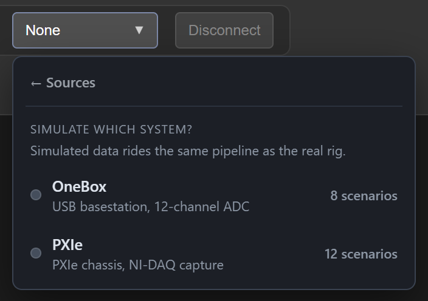
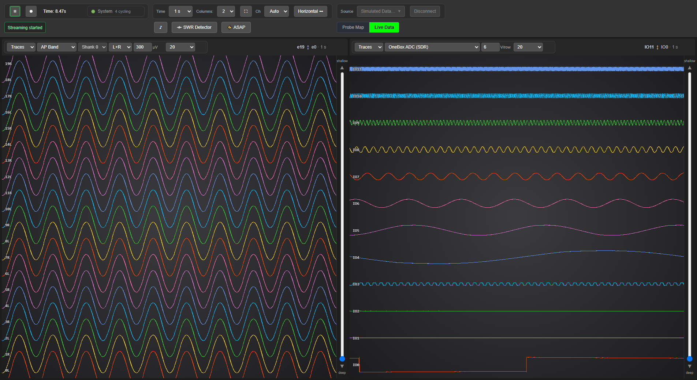
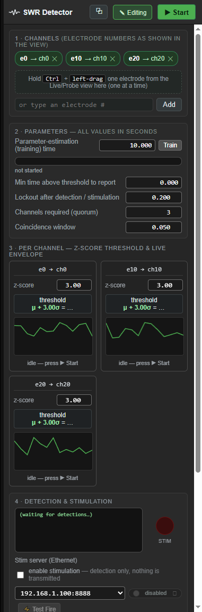
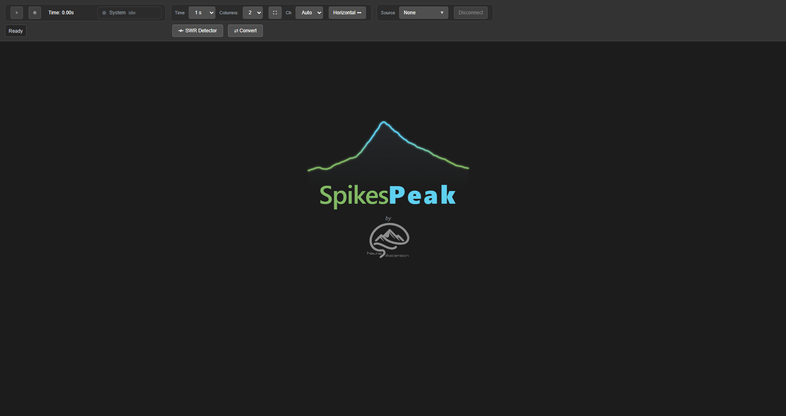
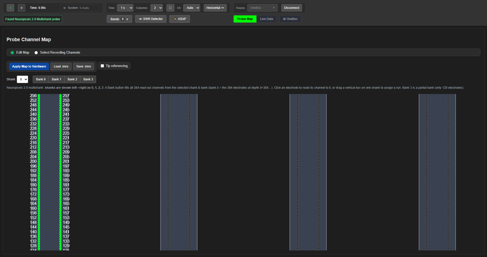

SpikesPeak — User Guide#
How to run SpikesPeak and use the interface. SpikesPeak is a real-time neural acquisition app: a backend program serves a web UI that opens in a dedicated browser window (your everyday browser, in its own session), where you connect a probe, configure its channel map, and watch / record the live signal.
Guides#
| Doc | For |
|---|---|
| This page | Launching the app + a reference for every toolbar control. |
GUI-Guide.md |
Illustrated end-to-end walkthrough (screenshots): connect, channel map, live view, record-channel selection, recording, and checking the result — NP1.0 + simulation. |
Neuropixels-1.0.md |
Step-by-step: connect a Neuropixels 1.0 probe, set the channel map, and stream. |
OneBox-NPX2.md |
Start to finish on the OneBox with an NPX 2.0 multishank probe — the hardware on the rig now: FTDI driver, connect, 4-shank map, live view, recording, the 12-channel OneBox ADC, and how to shut down without costing a power-cycle. |
Tutorial-OneBox-NPX2.md |
Step-by-step, one screenshot per click, on the real rig (2026-09-02): a 2.0 probe on the OneBox — choose electrodes across three shanks, apply, stream, one shank per column, the per-column controls and dropdowns, 120 traces per column. The narrated video is being produced. |
Tutorial-PXIe-NPX1.md |
The same sequence for a 1.0 probe on the PXIe basestation, and what differs on a 1.0 (banks, two columns, AP/LFP from the probe itself). Per-step screenshots to follow. |
Exporting-Recordings.md |
Turning a finished session into SpikeGLX or Open Ephys for analysis — what converts, what to check before an experiment, and the things that will surprise you. |
SimulatedData.md |
Every hardware-free simulated source and every way to operate it — the picker, all NP1/NP2/NI-DAQ/ripple/play-file variants, config knobs, recording, and CLI/WebSocket control. |
RippleDetection.md |
Using the Ripple Detection module (illustrated): pick channels, set thresholds/quorum, Start/Pause/Edit, live z-tuning, and HDF5 "play file" replay. |
SpikeAudio.md |
Listening to a channel through the speakers: the ♪ dock, picking a channel from the live view, Thresh/Volume/Boost, the in/out meter as a diagnostic, and choosing an output device (worth up to 90 ms of delay). |
CommandLineControl.md |
Driving SpikesPeak without the GUI: typing commands at the backend console, and the Python control CLI (list/select/play/record) — with worked examples. |
Quick start — 6 steps to streaming (and your first detection)#
No hardware needed — this uses a simulated source. (Full illustrated walkthroughs:
GUI-Guide.md for connect → record, RippleDetection.md for the
ripple module.)
- Launch. Run
run_spikespeak.bat(./run_spikespeak.shon Linux/macOS). A dedicated browser window opens athttp://localhost:8234. (Details: Launching SpikesPeak.) - Pick a source. Toolbar Source ▸
Simulated Data ›▸ OneBox (or PXIe — this scenario is offered under both) ▸ Neuropixels 1.0 ▸ Neuropixels 1.0 — Ripple Detection (GUI). It connects with no probe attached.

3. Play. Press ▶ — the view switches itself to the Live Data tab, and you'll see the live waveforms, one trace per channel, stacked by depth.
An older shot, from a real 1.0 probe on the OneBox: its toolbar still reads Window / Ripple Detection where today's reads Time / SWR Detector, and the watermark is from the chart library removed on 2026-08-27. The traces are the thing to look at. 4. Open the SWR Detector. Click SWR Detector in the toolbar; the dock slides in on the right. 5. Add a channel + arm. Drag an electrode label from the view (or type a number and Add), set Parameter-estimation time = 3 s (quick test — the shot below still shows the 10 s default), then press ▶ Start.

6. Watch it fire. After ~9 s the columns arm and detections start — the cowsay printsRipple detected!
The red STIM LED does not light on detection alone -- it lights only when the
stimulation server acknowledges a real pulse. Stimulation is also opt-in: the dock's
enable stimulation gate defaults OFF and the server must be armed, so a detection transmits
nothing until you do both.

Launching SpikesPeak#
- Run
run_spikespeak.bat— or./run_spikespeak.shon Linux/macOS. A console window opens (status/log messages) and a dedicated browser window opens automatically on the UI (served locally athttp://localhost:8234).

The browser half of the launch: Source: None, status Ready. The console window is a separate window and not in this frame.
Use the launcher, not
bin/SpikesPeak.exe. The launcher is what puts Qt, the Neuropixels API and HDF5 onPATH. Started without them the exe exits0xC0000135(STATUS_DLL_NOT_FOUND) before it prints anything — which is what an operator sees as "a window flashed and closed". There is nothing wrong with the install when that happens; the wrong thing was started.
- If the browser doesn't open, browse to
http://localhost:8234manually. - Closing the browser window quits the app (after a ~2-second grace, so a refresh is safe). You no longer need to close the console window separately.
Flags worth knowing:
| flag | what it does |
|---|---|
--tab |
open the UI as a tab in your default browser instead of a dedicated window. This was the old behavior; the dedicated window is now the default because it runs in its own browser session, separate from your everyday profile. |
--no-browser |
open no browser at all. Use this for any scripted or automated run — otherwise SpikesPeak opens a second GUI on top of the one you are already driving. |
Use the machine that has the PXI / OneBox / probe hardware. Without hardware, choose Simulated Data or a synthetic source to explore the UI — the simulated and play-file sources render the probe channel-map editor exactly like a real probe, so they are the best hardware-free way to learn it.
The toolbar (left → right)#

The two toolbar rows, here with a 2.0 multishank probe connected on the OneBox and not yet playing (the
full window, so the Probe Map underneath is in frame too). It is the fullest toolbar a OneBox rig shows,
short of ♪, which had not appeared yet at this point — it is there once streaming starts (see the
live view in GUI-Guide.md §3). A 1.0 probe's toolbar has no Bands ▾, because a 1.0
streams hardware AP and LFP bands and there is nothing to derive; a PXIe rig with an NI-DAQ card shows
▤ NI-DAQ where ▣ OneBox is here.
Row 1 — transport, view, source#
| Control | What it does |
|---|---|
| ▶ / ⏸ Play | Start / pause streaming. Disabled until a source is connected and the device is ready. |
| ⏺ Record | Start / stop writing data to disk. Enabled only while playing. |
| Time: 0.00s | Elapsed stream time — a readout, not a control. (Not to be confused with the Time dropdown below, which sets the width of the trace window. Two things named Time, one of which you can click.) |
| ● System (chip) | Whether the rig is actually turning, in one glance: green = every source and processor cycling, amber = streaming but something has not been seen to turn yet, red (pulsing) = something stalled, gray = nothing acquiring, which is not a fault. Beside the dot is a live count — 4 cycling, 2 ready (the amber case), 1 stalled, source stalled, idle. Click it for the per-processor detail. A stall names itself on the chip rather than only in the tooltip, because a fault you have to hover to find is a fault you will not find. |
| ▾ view (chip) | Only appears when the window is too narrow to hold the view controls. Hover to peek; click, or press Ctrl+Shift+V, to pin them open. If the view controls seem to have vanished, this is where they went. |
| Time (dropdown) | Seconds of history shown by trace columns (1 / 2 / 5 / 10 s). Heatmap columns carry their own span, set per column. It was called Window until detached view windows landed, at which point "Window" started reading as which window. |
| Columns: / Rows: | How many side-by-side chart columns to show (1–4; default 2). The label reads Columns: in horizontal layout and Rows: in vertical. |
| ⛶ | Open another view window — more columns or rows of the same live data, on a second monitor. No toolbar in it: no play, no record, no probe map, because the rig has one operator. See GUI-Guide.md §3b. |
| Ch | Channels shown per column/row: Auto (20 horizontal / 40 vertical), 20, 40, 60, 80, 120. |
| Horizontal ⬌ / Vertical ⬍ | Lay the strips out as side-by-side columns (landscape monitor) or full-width stacked rows (portrait / rotated monitor, and laminar probes). The choice persists across reloads. |
| ▾ source (chip) | The same peek behavior for the Source group — hover to peek, click or Ctrl+Shift+S to pin. |
| Source | Pick the input: Neuropixels (basestation and probe both auto-detected), PXIe with NI-DAQ (shown when a PXIe module is present), Intan (MicroZed) — not implemented yet (listed on purpose; it refuses to connect and says so), or Simulated Data ›, which drills down system → probe → scenario. Selecting one connects it. If both a OneBox and a PXIe module are attached the menu asks which to use instead of guessing, offering OneBox / PXIe / PXIe + NI-DAQ (the explicit profiles; the auto-detecting PXIe with NI-DAQ is left out there because it would only ask again). |
| Disconnect | Releases the current source and returns to "None". |
Row 2 — status, module tabs, view tabs#
| Control | What it does |
|---|---|
| Status box (left) | The latest action, color-coded: green = success, amber (pulsing) = working, red = error, gray = info. Hover for the full message + time. A ● REC → name badge joins it while recording. |
| Bands ▼ | Menu of the derived bands — LFP and Spike, computed from a 2.0 probe's single wideband stream. Each row has its own on/off switch; the button carries a count of how many are running and turns green when that is not zero. They ship off: nothing filters 384 channels until you ask for it. |
| ♪ | The spike audio monitor — listen to one channel through the speakers. Appears for any probe source, 1.0 or 2.0. See SpikeAudio.md. |
| SWR Detector | Opens the ripple dock on the right: detection channels, thresholds, quorum, live envelopes and the stimulation controls. The main view shrinks to fit rather than being covered. See RippleDetection.md. |
| ⚡ ASAP | Low-latency delivery, per module. Appears when the connected profile contains a module that offers the control (the ripple detector and the probe/simulated sources do; the recorder and the derived-band filters deliberately do not). Turning it on for a module turns it on for everything upstream feeding it. It is off unless asked for — it is a busy-wait costing about a whole core — and the toggle is disabled while streaming, because the source reads the setting once, at Play. See RippleDetection.md §8. |
| ▣ OneBox | Appears when a OneBox is connected — the box's own device panel (its 12-channel ADC and I/O). |
| ▤ NI-DAQ | Appears when an NI-DAQ card is connected — that device's panel. It shows a readout of the device (name, product, number of analog input channels) and two selects: Voltage range (each option is labeled with the bit depth the device reports for that window — a narrower range gives finer resolution; the code used to take the widest without asking) and Terminal configuration (RSE / NRSE / Differential / Pseudo-differential). Both apply on the next connect — not immediately, and not on Play, because DAQmx fixes them when the input channel is created — so after changing one, Disconnect and reselect PXIe with NI-DAQ. |
| ⇄ Convert | Export a finished recording to SpikeGLX or Open Ephys. Appears only while no source is connected — conversion is a batch job competing for the disks the recorder uses, so there is no case where running it mid-acquisition is right. See Exporting-Recordings.md. |
| Probe Map / Live Data (tabs, right) | Switch between the channel-map editor and the live waveforms. The bar appears once a probe map exists — connecting a probe opens Probe Map, and streaming switches to Live Data on the backend's confirmation. Pausing does not switch back: you may have paused in order to edit the map. |
Inside a column (not the toolbar)#
| Control | What it does |
|---|---|
| Traces / Heatmap | The first dropdown in each column's control strip. Traces is one line per channel; Heatmap is time across, channel down, color for amplitude — the way to see the whole probe at once. Same channels, same band, different way of looking. See GUI-Guide.md §3a. |
| Ch: (per column) | That column's own channel count (Auto / 20 / 40 / 60 / 80 / 120), overriding the toolbar's Ch for the one column. In heatmap mode it gains an All option — the whole probe in one column, which is the usual way to look at one. See GUI-Guide.md §3a. |
| ▾ controls (chip) | The same peek pattern as the toolbar chips: when a column is too narrow for its control strip, the strip folds to a chip. Hover to peek, click or Ctrl+Shift+<n> to pin. |
The two views (Neuropixels sources)#
- Probe Map — the channel-map (IMRO) editor: choose which electrodes record, then push the map to the probe. See the NP1.0 guide.
- Live Data — the streaming waveforms, one trace per channel, depth-sorted. See the NP1.0 guide.
Status messages you'll see#
| Message | Meaning |
|---|---|
Connecting to Neuropixels… (amber pulse) |
Opening the source. The line is built from the profile name, so it names whatever you picked — Connecting to Simulated Data…, Connecting to OneBox…. |
Found Neuropixels 1.0 probe / Connected — device ready (green) |
Probe detected; you can configure + play. |
Applied updated probe map successfully (green) |
Your channel map was written to the probe and verified. |
Streaming started / Streaming paused |
Play toggled. |
Recording started / Recording stopped |
Record toggled. |
Disconnected |
Source released. |
| anything red | An error — check the console window for detail. |
Current support#
| Source / feature | Status |
|---|---|
| Neuropixels 1.0 | ✅ Connect, channel-map (IMRO) editor, depth-sorted live view, and recording — verified on real hardware (probe + NI-DAQ). |
| Neuropixels 2.0 multishank | ✅ 4-shank map editor + depth-sorted live view (mapping checked against the official manual). Verified on a real 2.0 multishank probe: streaming, pause/play, channel-map (Bank) apply (writeProbeConfiguration verified OK), recording, and the full ripple→stimulation closed loop — see RippleDetection.md. |
| NI-DAQ | ✅ 8 analog channels + TTL sync, verified with real hardware. Live view + record grid are 0-indexed to match the ai0–ai7 labels. |
| Ripple detection + closed-loop stim | ✅ Hardware-validated on both probes over both transports (PXIe and OneBox), synthetic ripple in saline → detection → stimulus, n ≈ 1000 per cell, 0 unmatched across the full quorum × delivery matrix. Sub-millisecond with ASAP delivery. Numbers: RecordingTests/CLOSED_LOOP_LATENCY.md. Operating the dock: RippleDetection.md. Pi stim-server setup: ../raspberrypi_pulsegenerator/README.md. Those numbers are from the saline bench. The rig did go in vivo on 2026-08-28 — SpikesPeak_Status.md §65 records the fixes made that morning, and §85 the session itself. That recording was noisy and needed a lot of filtering; the rig has been cleaned up considerably since. It added no rows to this table, so every figure here is still a saline one. More in-vivo data is expected. |
| Simulated sources | ✅ Full hardware-free NP1 / NP2 / NI-DAQ / ripple / play-file sources for development. See SimulatedData.md. |
| Neuropixels OneBox | ✅ Supported. Connect, stream, record and reconnect with NP1.0 or NP2.0 over USB3, plus the box's own 12-channel ADC in volts. Closed-loop ripple→stim runs on it at 0.92 ms (NP1.0) / 0.55 ms (NP2.0) with ASAP delivery — see RecordingTests/CLOSED_LOOP_LATENCY.md. The WavePlayer stim output works and is measured on DAC0 → breakout BNC IO0 (#49 closed 2026-08-24). It has now been compared against the Pi path (2026-08-25): the DAC reaches voltage a median 363 µs earlier, order-corrected, n ≈ 1000 per ordering — but it is a voltage source where the AM 2300 is a constant-current stimulator, so read that as a transport comparison, not a stimulus one (RecordingTests/CLOSED_LOOP_LATENCY.md). Operator walkthrough: OneBox-NPX2.md. |